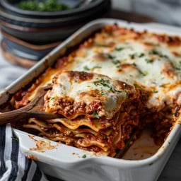
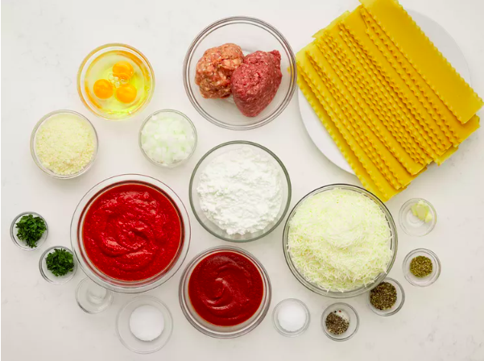

This is my mom's special homemade lasagna recipe with a meaty, made-from-scratch tomato sauce and a deliciously cheesy filling.
A more traditional homemade lasagna filling would be made with ricotta but my mom's recipe calls for a blend of small-curd cottage cheese and Parmesan.
I have found none better anywhere. Serve with a leafy green salad and crusty garlic bread.Step 1
Gather all ingredients.

Step 2
Combine pork and ground beef in a large, deep skillet over medium-high heat; cook and stir until browned and crumbly, 5 to 7 minutes.
Step 3
Add onion and cook until translucent, about 5 minutes.
Step 4
Stir in crushed tomatoes, tomato sauce, 1 tablespoon fresh parsley, garlic, basil, salt, oregano, and sugar. Reduce heat to medium-low and simmer, stirring occasionally, for 30 minutes.
Step 5
While the sauce is simmering, bring a large pot of lightly salted water to a boil. Cook lasagna noodles in the boiling water, stirring occasionally, until tender yet firm to the bite, 8 to 10 minutes. Drain and set aside. While the noodles are cooking, preheat the oven to 375 degrees F (190 degrees C).
Mix cottage cheese, Parmesan cheese, eggs, remaining 1 tablespoon fresh parsley, salt, and pepper in a large bowl until combined.